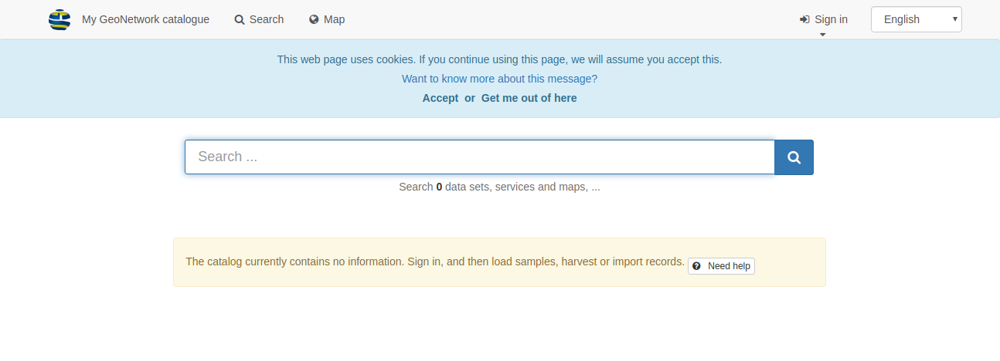
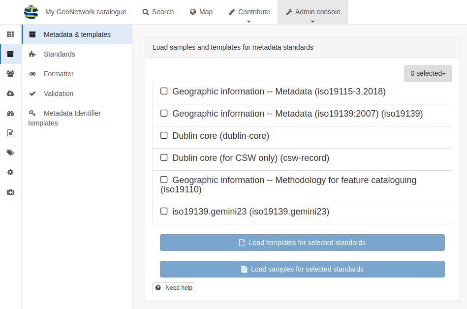

GeoNetwork is a catalog application to manage spatially referenced resources.
It provides powerful metadata editing and search functions as well as
an interactive web map viewer. It is currently used in numerous
Spatial Data Infrastructure initiatives across the world.
This Quick Start also describes:
some of the different ways you can search for spatial data
how to download and display data from the search results
This topic describes how to start GeoNetwork after installation on your machine.
Before you start:
Ensure you have successfully installed GeoNetwork using the steps described in Installingtheapplication.
To start the catalog:
From your GeoNetwork folder location, open the bin folder and double-click start.bat (on windows) or startup.sh (on linux). This initiates a web service for GeoNetwork, which you can use to view the catalog.
Tip: If you are using the command line, you can view the log messages directly in the console.
Open a web browser and go to the GeoNetwork homepage. If you installed it on your computer, use this link http://localhost:8080/geonetwork.
The GeoNetwork catalog page is displayed.

Once you have started the catalog, you can sign in to view additional options, search for specific resources or drill down to view detailed information about the resource.
This topic describes how to sign in using your admin login details and load templates to view examples of resources in the GeoNetwork catalog.
On the GeoNetwork home page, from the top menu, click Signin to connect as administrator. The Sign in page displays.
Enter the username and password and click Sign in. The default admin account details are: username admin with password admin.
After you sign in, the top toolbar displays an adminconsole and your login details.
Navigate to adminconsole and click on metadataandtemplates:

On the Metadata & templates page, select all standards from the Standards available list, and:
Click loadsamples, and
Click loadtemplates to load examples.
From the top menu, click Search to view the examples: